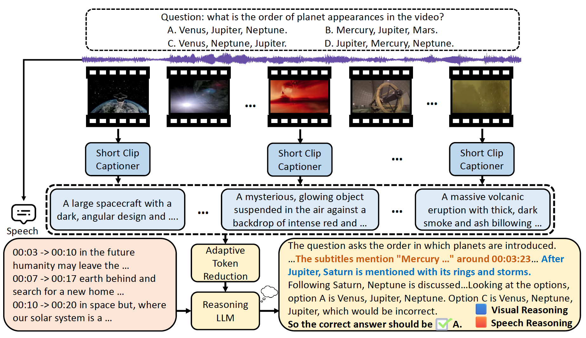
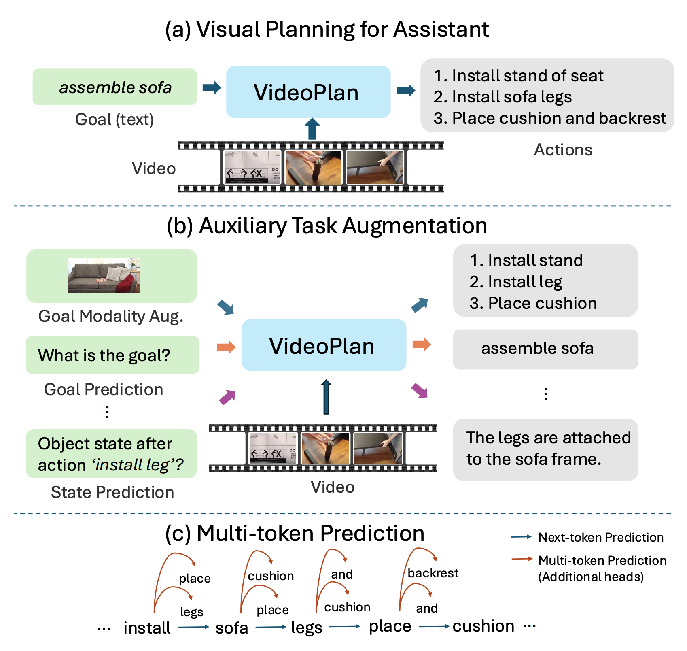
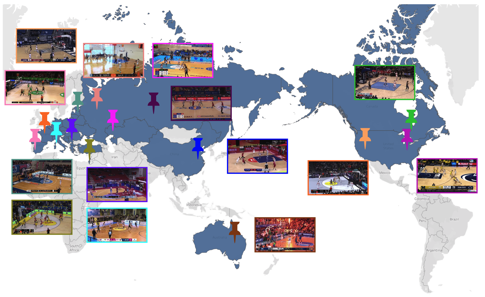

|
Ce Zhang (张册) I am a third year Ph.D. student at UNC-Chapel Hill working with Prof. Gedas Bertasius. Previously, I obtained my Master's degree from Brown Universiy advised by Prof. Chen Sun in 2023. Before that, I obtained my Bachelor's degree from Southeast University in China in 2020. During my Ph.D, I interned at Meta AI (Summer 2024, Fall 2024) working with Satwik Kottur and at Google DeepMind (Summer 2025) working with Dahun Kim. I like music, guitar, basketball and PC games. Email / CV / Google Scholar / Twitter / Github |

|
ResearchI'm broadly interested in Computer Vision, Multimodal learning and Robotics. Currently, I'm mainly working on Video Understanding, with a focus on leveraging foundation models (LLMs, VLMs, etc.) to solve multiple video understanding tasks. |
News
|
Publication |
|  |
SiLVR : A Simple Language-based Video Reasoning Framework
Ce Zhang, Yan-Bo Lin, Ziyang Wang, Gedas Bertasius, Mohit Bansal TMLR We introduce SiLVR, a simple language-based video reasoning framework. SiLVR achieves SOTA performance on Video-MMMU (comprehension), Video-MMLU, Video-MME (long split, with subtitles), CGBench (MCQ), and EgoLife. Additionally, we show that reasoning LLMs bring greater benefits for tasks that require complex video reasoning. We believe the simple yet effective design of SiLVR will enable the research community to build on our work and use our framework as a baseline for more powerful methods. |
|  |
Enhancing Visual Planning with Auxiliary Tasks and Multi-token Prediction
Ce Zhang, Yale Song, Ruta Desai, Michael Louis Iuzzolino, Joseph Tighe, Gedas Bertasius, Satwik Kottur WACV, 2026 We introduce VideoPlan, a multimodal large language model optimized for long-horizon visual planning. We introduce Auxiliary Task Augmentation and Multi-token Prediction to enhence the visual planning ability. VideoPlan achieves SOTA performance on COIN and CrossTask for the challenging Visual Planning for Assistance (VPA) task. VideoPlan also achieves competitive performance on the Ego4D Long-term Action Anticipation benchmark. |
|  |
BASKET: A Large-Scale Video Dataset for Fine-Grained Skill Estimation
Yulu Pan, Ce Zhang, Gedas Bertasius CVPR, 2025 We present BASKET, a large-scale basketball video dataset for fine-grained skill estimation. BASKET contains more than 4,400 hours of video capturing 32,232 basketball players from all over the world. We benchmark multiple SOTA video recognition models and reveal that these models struggle to achieve good results on our benchmark. |

|
A Simple LLM Framework for Long-Range Video Question-Answering
Ce Zhang*, Taixi Lu*, Md Mohaiminul Islam, Ziyang Wang, Shoubin Yu, Mohit Bansal, Gedas Bertasius EMNLP, 2024 We present LLoVi, a language-based framework for long-range video question-answering (LVQA). LLoVi decomposes LVQA into two stages: (1) visual captioning by a short-term visual captioner, and (2) long-range temporal reasoning by an LLM. We did thorough empirical analysis on our proposed framework. LLoVi achieves state-of-the-art performance on EgoSchema, NExT-QA, IntentQA and NExT-GQA. |

|
AntGPT: Can Large Language Models Help Long-term Action Anticipation from Videos?
Qi Zhao*, Shijie Wang*, Ce Zhang, Changcheng Fu, Minh Quan Do, Nakul Agarwal, Kwonjoon Lee, Chen Sun ICLR, 2024 We use discretized action labels to represent videos, then feed the text representations to LLMs for long-term action anticipation. Results on Ego4D, EK-55 and Gaze show that this simple approach is suprisingly effective. |

|
Object-centric Video Representation for Long-term Action Anticipation
Ce Zhang*, Changcheng Fu*, Shijie Wang, Nakul Agarwal, Kwonjoon Lee, Chiho Choi, Chen Sun WACV, 2024 We proposed ObjectPrompts, an approach to extract task-specific object-centric representations from general-purpose pretrained models without finetuning. We also proposed a Transformer-based architecture to retrieve relevant objects from the past observation for long-term action anticipation. |

|
Goal-Conditioned Predictive Coding as an Implicit Planner for Offline Reinforcement Learning
Zilai Zeng, Ce Zhang, Shijie Wang, Chen Sun NeurIPS, 2023 We investigate if sequence modeling has the capability to condense trajectories into useful representations that can contribute to policy learning. GCPC achieves competitive performance on AntMaze, FrankaKitchen and Locomotion. |
Services
Reviewer: NeurIPS 2025, ICCV 2025, CVPR 2025, ECCV 2024 (Outstanding Reviewer Award), ACL Rolling Review (June 2024, Dec. 2024), IEEE TCSVT |
|
This webpage is adapted from Jon Barron's page. |